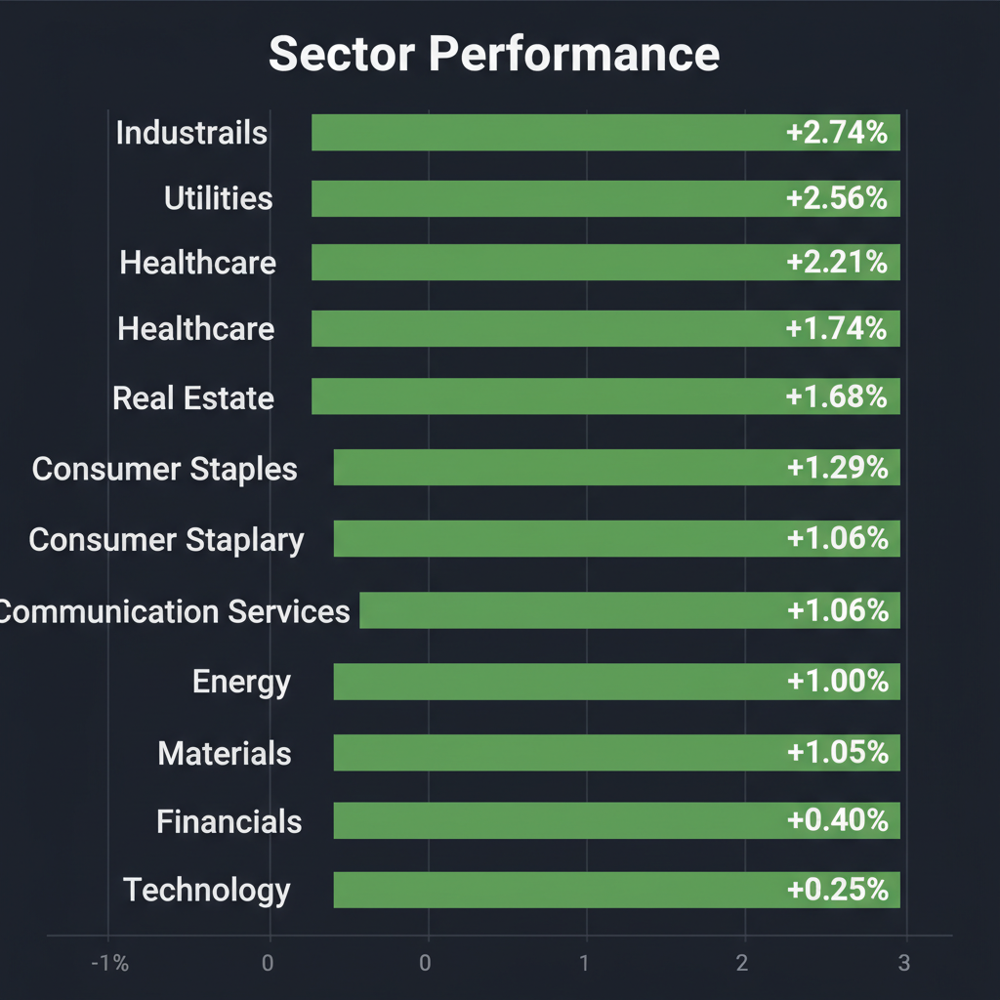
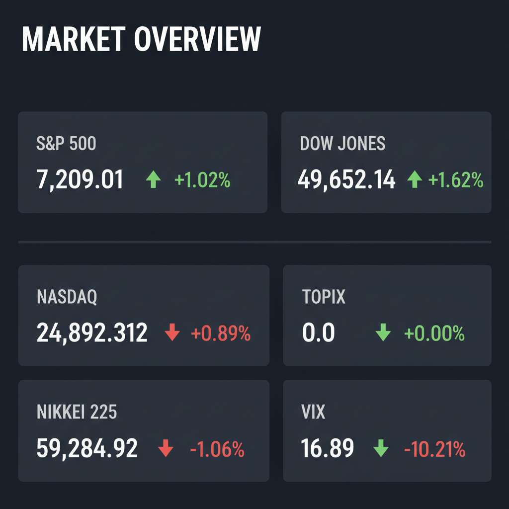

Daily Investment Report - 2026-05-01
Generated: 2026/5/1 7:27:24


本日の投資チームミーティングにおける各エージェントの分析を統合し、投資家向けの最終レポートを作成しました。
1. エグゼクティブサマリー
- 日米の主要指数は最高値圏にありますが、内部では極端な二極化と地政学・インフレリスクが進行しており、極めて警戒が必要な相場環境です。
- 資金の主戦場はAIのソフトウェア領域から、それを支える電力網やデータセンター設備といった「実物インフラ」へと明確にローテーションしています。
- 過熱感のある大型株やインデックス投資を避け、確かな価格転嫁力とニッチな成長力を持つ中小型銘柄への選別投資と、厳格なダウンサイド保護（下値対策）が直ちに求められます。
2. 注目銘柄リスト
強気（買い推奨）
- 愛知電機（6623） [小型株]: AIデータセンターの拡大に伴う変圧器・電力インフラ需要の爆発的増加を直接享受します。低PBR・低PERで潤沢なキャッシュを持ち、下値リスクが限定的な「安全な成長株」です。
- グローバルセキュリティエキスパート（4417） [小型株]: 地政学リスクを背景に、手薄な中堅・中小企業向けのサイバーセキュリティ需要を独占しています。年率20%超の成長と高ROEを両立しており、押し目買いの絶好のターゲットです。
- OrthoPediatrics（KIDS） [中型株]: 小児整形外科という大手が参入しづらいニッチ市場を独占し、高い粗利益率を維持しています。マクロ環境やインフレに左右されない最強のディフェンシブ成長銘柄です。
中立（様子見）
- Twilio（TWLO） [中型株]: 決算は好調でフリーキャッシュフロー（FCF）は改善途上にありますが、営業黒字の定着を完全に確認するまでは、段階的なエントリーに留めるべきです。
- Blue Owl [大型・中型株]: SpaceX向けローンでの10倍リターン報道で急騰していますが、プライベート市場全体の過熱感とテクニカルな高値警戒（窓開け）があるため、利益確定売りによる調整を待つべきです。
弱気（警戒）
- Cardinal Health（CAH） [大型株]: 決算の入り混じる結果（mixed results）で急落しました。薄利多売の卸売モデルはコストインフレの直撃を受けやすいため、落ちるナイフを掴むべきではありません。
- Rivian（RIVN） [中型株]: DOE（米エネルギー省）の融資再交渉で一時的な資金繰りは改善したものの、粗利益段階での赤字と極めて重い設備投資負担が続いており、ファンダメンタルズ投資の対象外です。
3. セクター推奨ランキング
AIデータセンターの物理的建設や、製造業の国内回帰に伴う重機・設備需要の爆発的増加を真っ先に享受します。
AIによる莫大な電力消費と熱冷却問題の解決に不可欠であり、次世代電力網やクリーンエネルギーシフトの強力な追い風を受けています。
米イラン紛争など地政学リスクの長期化により、国策および企業レベルでの防衛・セキュリティ投資が不可避の状況です。
高金利の長期化とドル高が新興国通貨（インドルピー等）を圧迫し、食糧・エネルギーインフレが消費者の購買力を削ぐため、強い逆風下にあります。
4. 今週の注目イベント
- 5月の企業決算ラッシュ本格化：特に日本企業において、原材料インフレに対する「価格転嫁力」の有無が問われる決算発表とガイダンスの確認。
- 中東地政学およびエネルギー市場の動向：イランの報復措置や海上封鎖懸念に関連する、原油価格（インフレ先行指標）のボラティリティへの警戒。
- 新興国中央銀行の為替防衛の動き：1,000億ドル規模に膨張しているインド準備銀行をはじめとする、新興国の為替介入とクレジットクランチ（信用収縮）の兆候監視。
5. リスク要因
- VIXの異常低下による「市場の慢心」とフラッシュ・クラッシュ：地政学危機下でのVIX16台への急低下はリスクの過小評価であり、突発的なパニック売り（暴落）の土壌が形成されています。
- 複合インフレと高金利の長期化：イラン紛争による原油高と、エルニーニョ現象による食糧（コメ）供給逼迫が重なり、スタグフレーションを引き起こすリスク。
- 日本市場の内部崩壊：日経平均が高値圏にある裏で、東証プライム市場の200銘柄が新安値を更新している極端な二極化（市場の歪み）。
6. アクションアイテム
- ポートフォリオの現金（キャッシュ）比率の大幅な引き上げ：目前に迫る調整リスクに備え、流動性を確保し、暴落時の優良株買いの余力を作ってください。
- AI過熱銘柄の利益確定と実物インフラ株への資金シフト：すでにバリュエーションが膨張した大型テクノロジー株を一部売却し、愛知電機のような「変圧器・電力網」を支える割安な中小型インフラ株へ資金を移動させてください。
- インデックス連動の縮小と厳格な個別株選別：日本株のインデックス買いを止め、決算でフリーキャッシュフローと価格決定力の強さが証明された企業のみに投資先を絞ってください。
- テールリスクヘッジの即時実行：VIXが不自然に低迷している今のうちに、VIXコールオプションやプットオプション等を利用し、安価にポートフォリオの下値保護（プロテクション）を構築してください。